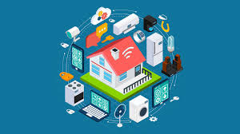
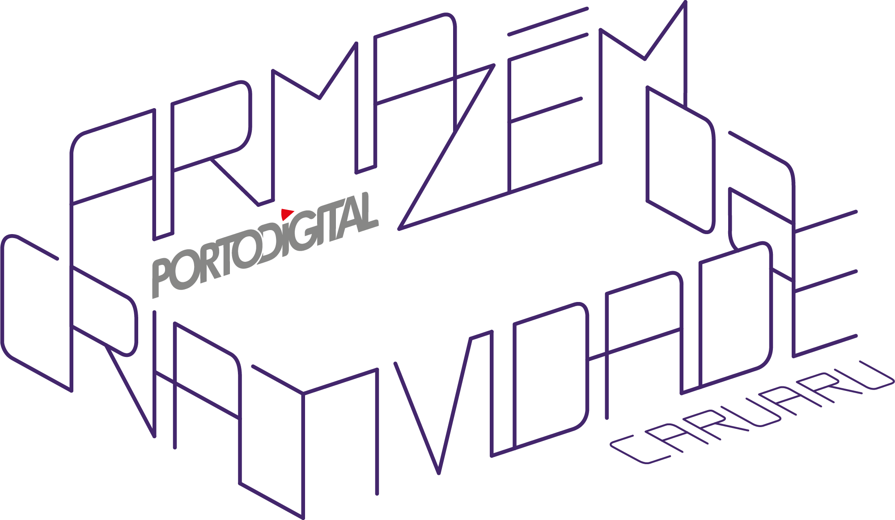
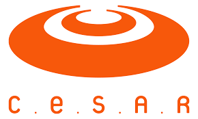
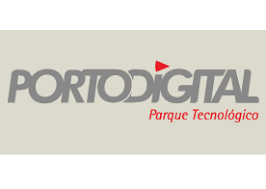
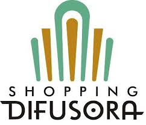
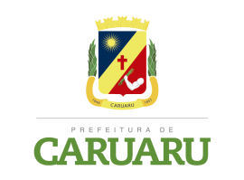
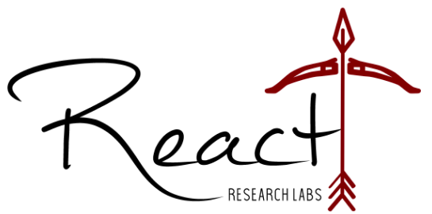

Smart Labs
Laboratório de Pesquisa em Iot
Internet das Coisas e o futuro
Internet das coisas é um conceito tecnológico que surge da presença ubíqua de dispositivos eletrônicos conectados à internet capazes de interagir com o ambiente, gerar e compartilhar informações. Eletrodomésticos, carros, wearables, chaves, mesas, espelhos e etc. São inúmeras as possibilidades de anexar a computação em coisas que pertençam ao cotidiano das pessoas. Potencializa aplicações como automação residencial, automação industrial, smart cities, serviços de telessaúde, entre outros. Em 2025, espera-se um impacto econômico de 2,7 a 6,2 trilhões de dólares. O potencial de IoT na produtividade brasileira e na melhoria dos serviços críticos do país pode chegar a cerca de US$ 200 bilhões em 2025, considerando a utilização de IoT em todos os ambientes. Para atingir essa marca, serão necessárias plataformas de IoT capazes de gerenciar os dispositivos e os dados gerados, fornecendo armazenamento, processamento e análise dos dados.
Objetivo
O Smart Labs foi criado com o objetivo de incetivar a pesquisa no âmbito de tecnologia de Internet das Coisas(IOT). A iniciativa surgiu da necessidade de fomentar em Caruaru e no Agreste de Pernambuco pesquisa de ponta e de qualidade para trazer melhorias para a cidade de Caruaru e região e tem se destacado em criar aplicações de Internet das Coisas utilizando a plataforma Knot do C.E.S.A.R.
Fundador e Parceiros
O Smart Labs foi criado pela iniciativa do professor Jorge Fonseca da Universidade de Pernambuco Campus Caruaru e é fruto de uma parceria da Universidade de Pernambuco com o C.E.S.A.R(Centro de Estudos Avançados do Recife), empresa situada no Recife antigo fundada por Sílvio Meira, um dos gurus da área de Tecnologia da Informação conhecido mundialmente, Porto Digital, Armazém da Criatividade, Prefeitura de Caruaru, a empresa LVF emprendimentos(Shopping Difusora) e o Laboratório React.
     Localização
O Smart Labs está situado em dois locais(Clique no link para saber a localização)
- Armazem da Criatividade - No Pólo Caruaru
- Shopping Difusora - No 15° andar na sala 1023

Smart Labs Team
Atualmente os que participam no Smart Labs são, o coordenador Jorge Fonseca, professor da UPE Caruaru e alunos graduandos do sexto e oitavo períodos do curso de Bacharelado em Sistemas de Informação da UPE.
Exemplos de Aplicações
Smart Trash - Lixeira inteligente que tem como objetivo poder abrir de forma autonoma a tampa da lixeira quando alguem de aproxima da mesma, mas não só isso, o pessoal da limpeza pode ser informado quando a mesma está cheia, pode-se analisar a quantidade de vezes em que a mesma ficou cheia durante um período específico e assim saber se há necessidade de se ter mais lixeiras no ambiente ou não, poder monitorar por meio de um Dashboard em uma página web em tempo real de qualquer lugar do mundo. Esse tipo de lixeira é muito importante em locais como hospitais em que é de extrema importancia a higiene para a segurança dos médicos e pacientes;
Smart Energy - Monitorar o consumo de energia em tempo real e se há variações de energia na rede elétrica de uma residencia, indústria e poder monitorar por meio de um Dashboard em uma página web em tempo real de qualquer lugar do mundo e poder interagir podendo por exemplo desligar todo o circuito ou circuitos parciais que vocẽ sabe que há problema. Assim você poderá evitar queimas de equipamentos, incendios e monitorar o consumo real de energia.